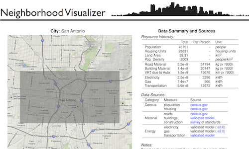
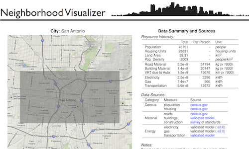
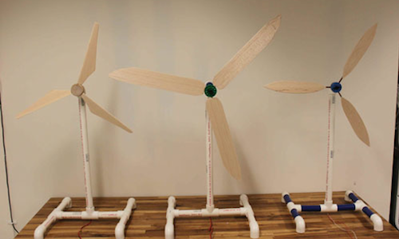
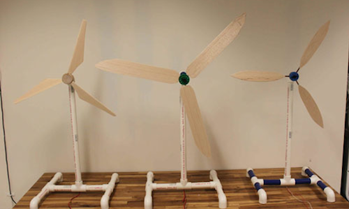

We are an urban analysis firm that uses spatial data, mapping and visualization
to gain a better understanding of how cities work.
to gain a better understanding of how cities work.
our work
Neighbourhood Visualizer
Donec iaculis aliquam ipsum, vitae tincidunt justo faucibus sit amet. Nam facilisis, ligula a viverra vulputate, neque est malesuada orci, non porta purus est non massa. Morbi lobortis metus id est posuere imperdiet. Nam molestie, sem ut molestie tincidunt, turpis lectus accumsan nulla, ac sodales sem sapien at odio. Praesent velit justo, vehicula sit amet blandit adipiscing, adipiscing non leo. Etiam in luctus dui. Nulla imperdiet, mauris venenatis rutrum viverra, lorem nisi sagittis elit, sit amet rutrum nunc elit at felis. In sem dui, lacinia quis vehicula gravida, convallis ac turpis. Vivamus augue purus, cursus ac interdum ac, porta a tellus. Phasellus lobortis sodales est, in laoreet nunc aliquet non. Duis mollis erat id orci vehicula bibendum. Nullam accumsan tincidunt viverra. Nullam gravida adipiscing tempor.

 


Raster image classification: rasclass
Donec iaculis aliquam ipsum, vitae tincidunt justo faucibus sit amet. Nam facilisis, ligula a viverra vulputate, neque est malesuada orci, non porta purus est non massa. Morbi lobortis metus id est posuere imperdiet. Nam molestie, sem ut molestie tincidunt, turpis lectus accumsan nulla, ac sodales sem sapien at odio. Praesent velit justo, vehicula sit amet blandit adipiscing, adipiscing non leo. Etiam in luctus dui. Nulla imperdiet, mauris venenatis rutrum viverra, lorem nisi sagittis elit, sit amet rutrum nunc elit at felis. In sem dui, lacinia quis vehicula gravida, convallis ac turpis. Vivamus augue purus, cursus ac interdum ac, porta a tellus. Phasellus lobortis sodales est, in laoreet nunc aliquet non. Duis mollis erat id orci vehicula bibendum. Nullam accumsan tincidunt viverra. Nullam gravida adipiscing tempor.


Nuvu sudio: global warming
Donec iaculis aliquam ipsum, vitae tincidunt justo faucibus sit amet. Nam facilisis, ligula a viverra vulputate, neque est malesuada orci, non porta purus est non massa. Morbi lobortis metus id est posuere imperdiet. Nam molestie, sem ut molestie tincidunt, turpis lectus accumsan nulla, ac sodales sem sapien at odio. Praesent velit justo, vehicula sit amet blandit adipiscing, adipiscing non leo. Etiam in luctus dui. Nulla imperdiet, mauris venenatis rutrum viverra, lorem nisi sagittis elit, sit amet rutrum nunc elit at felis. In sem dui, lacinia quis vehicula gravida, convallis ac turpis. Vivamus augue purus, cursus ac interdum ac, porta a tellus. Phasellus lobortis sodales est, in laoreet nunc aliquet non. Duis mollis erat id orci vehicula bibendum. Nullam accumsan tincidunt viverra. Nullam gravida adipiscing tempor.

 



URBMET.ORG

RASCLASS

NUVU STUDIO
what we do
We combine our firms's strong theoretical knowledge on urban issues and sustainability with the practical knowledge associated
with making and implementing our solutions.
We make elegant analysis systems centered around urban issues using:
- statistical and spatial analysis methods
- open-source tools
- open-data
We specialize in the integration of a wide variety of tools used in many different disciplines. We conceptualize,
analyze and visualize problems using the following software, tools and languages:
- Spatial Analysis: PostGIS, QGIS, ArcGIS
- Statistical Analysis: R, SQL
- Data Visualization: Processing, Raphael, D3
- Dynamic Reporting: LaTeX, PHP
- Scripting: Python
- Web-mapping: OpenLayers, MapServer
- Complexity Modelling: Vensim, Netlogo
who we are

David
Studied civil engineering in Dublin. After working briefly as an engineer, he started studying for a master’s in MIT in 2006. As part of his master’s research, David worked closely with the City of New Orleans after Hurricane Katrina, co-authoring their plan for sustainability. David graduated with a PhD from the Building Technology Program in the Department of Architecture in MIT in 2012. His research focus is on sustainability in urban areas and for his PhD he worked on developing tools and methods to understand how urban sustainability can be assessed and visualized.
Daniel
Studied physics in ETH-Zurich. For his master’s thesis, Daniel collaborated with physicists at CERN and developed a particle reconstruction method for the CMS experiment at the Large Hadron Collider in Geneva. He then moved to Lisbon to study at the Technical University of Lisbon (IST) for a PhD in the area of renewable energy from which he graduated in 2012. His research focused on identifying drivers of energy use in urban areas using spatial statistics; this included writing a statistics package (rasclass) for the R programming environment for land-use classification.